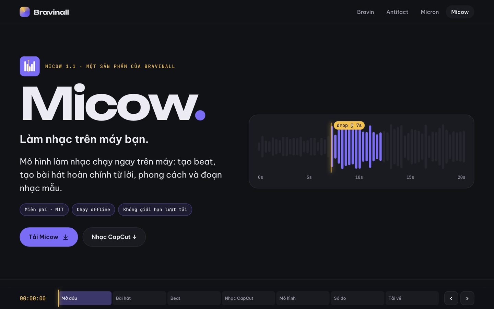
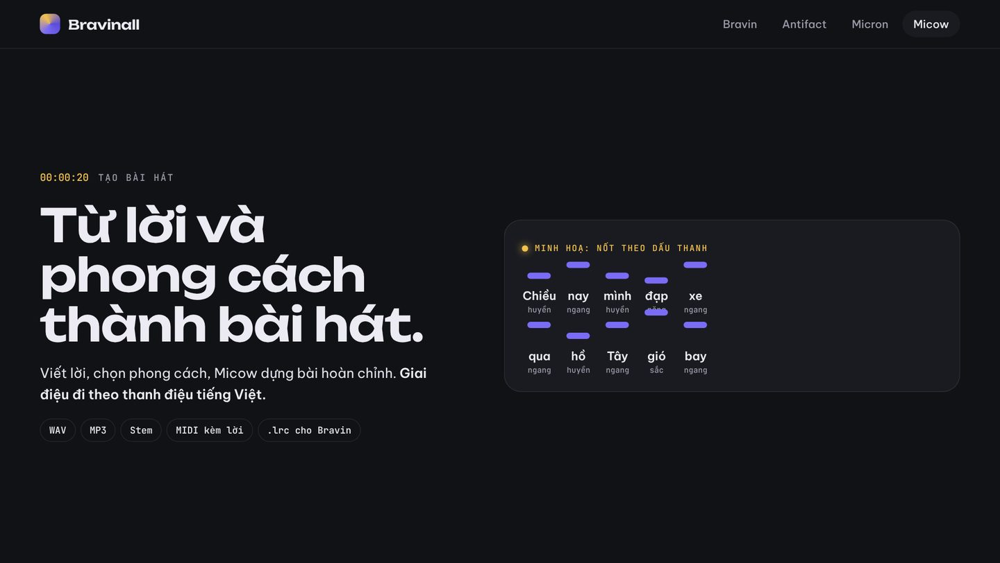
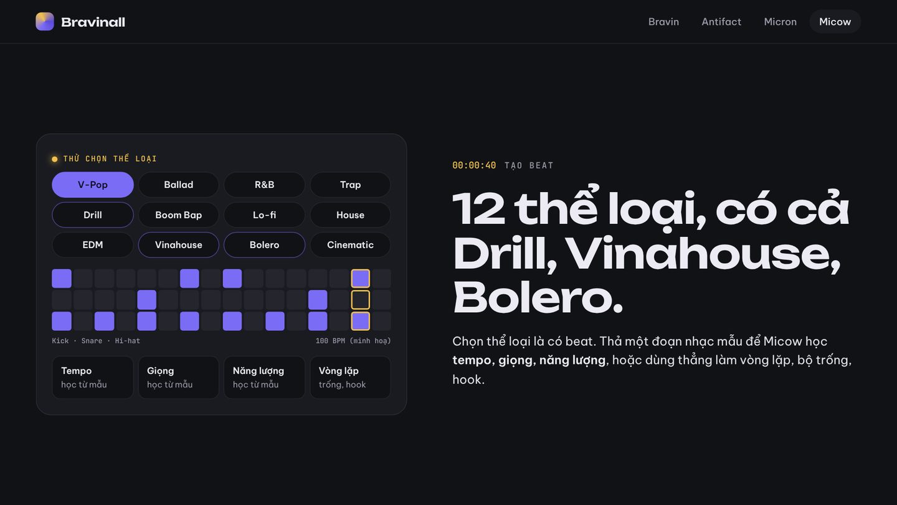
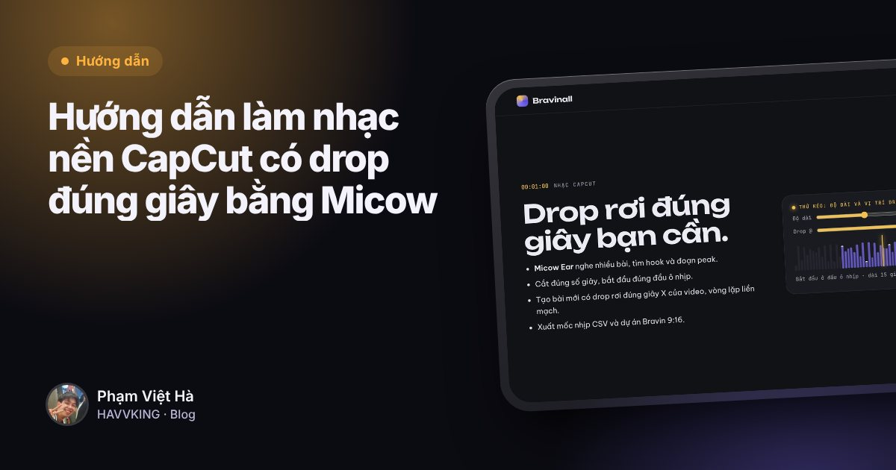

Phạm Việt Hà
Phạm Việt HàMục lục
Micow là mô hình làm nhạc chạy ngay trên máy bạn, ứng dụng thứ tư của Bravinall. Người xây Micow là Phạm Việt Hà, cũng chính là rapper và producer HAVVKING. Micow tạo beat, tạo bài hát hoàn chỉnh từ lời, phong cách và đoạn nhạc mẫu.

Từ lời và phong cách thành bài hát
Bạn viết lời (có thể đánh dấu [Phiên khúc], [Điệp khúc]), tả phong cách, thả đoạn nhạc mẫu nếu muốn. Micow soạn hoà âm, cấu trúc bài, và giai điệu đi theo thanh điệu tiếng Việt, để lời hát không bị "lệch dấu".

12 thể loại, có cả Drill, Vinahouse, Bolero
V-Pop, Ballad, R&B, Trap, Drill, Boom Bap, Lo-fi, House, EDM, Vinahouse, Bolero, Cinematic. Chọn thể loại là có beat. Bạn cũng có thể thả một đoạn nhạc mẫu để Micow học tempo, giọng, năng lượng, hoặc dùng thẳng làm vòng lặp, bộ trống, hook.
Drill ở đây có 808 trượt cao độ và hi-hat nhóm 3-3-2, đúng chất drill mà HAVVKING dùng trong Thuyết Tương Đối.

Ba engine
| Engine | Cần gì | Làm được |
|---|---|---|
| Micow Beat | CPU bất kỳ | Beat 12 thể loại trong vài giây, xuất WAV, MP3, stem, MIDI kèm lời, .lrc |
| ACE-Step 1.5 | GPU từ 4 GB hoặc Apple Silicon | Giọng hát thật theo lời, có tiếng Việt |
| Micow-LM | PyTorch, nên có GPU | Mô hình riêng bạn tự huấn luyện trên máy |
Nhạc CapCut có drop đúng giây
Micow Ear nghe nhiều bài, tìm hook và đoạn peak. Micow cắt đúng số giây, bắt đầu đúng đầu ô nhịp, hoặc tạo bài mới có drop rơi đúng giây X của video, xuất mốc nhịp CSV và dự án Bravin 9:16. Hướng dẫn chi tiết:

Đọc thêmHướng dẫn làm nhạc nền CapCut có drop đúng giây bằng MicowĐo được, không tự chấm điểm
Micow công bố số đo độ chính xác về thời gian (phách, ô nhịp, drop) trên bộ nhạc có nhãn. Micow cũng nói thẳng: về chất lượng giọng hát và phối khí, Suno vẫn hơn. Micow khác ở quy trình: chạy trên máy, dữ liệu ở lại máy bạn, không giới hạn lượt tải, có công cụ riêng cho video ngắn.
Cài Micow
Micow cần Python 3.10 trở lên và chạy trên CPU bất kỳ; GPU chỉ cần cho ACE-Step hoặc khi huấn luyện. Lệnh cài cho Windows, macOS, Linux nằm ở trang giới thiệu Micow.
 Trang giới thiệu MicowLệnh cài, gói .zip và mở Micow trên web
Trang giới thiệu MicowLệnh cài, gói .zip và mở Micow trên web